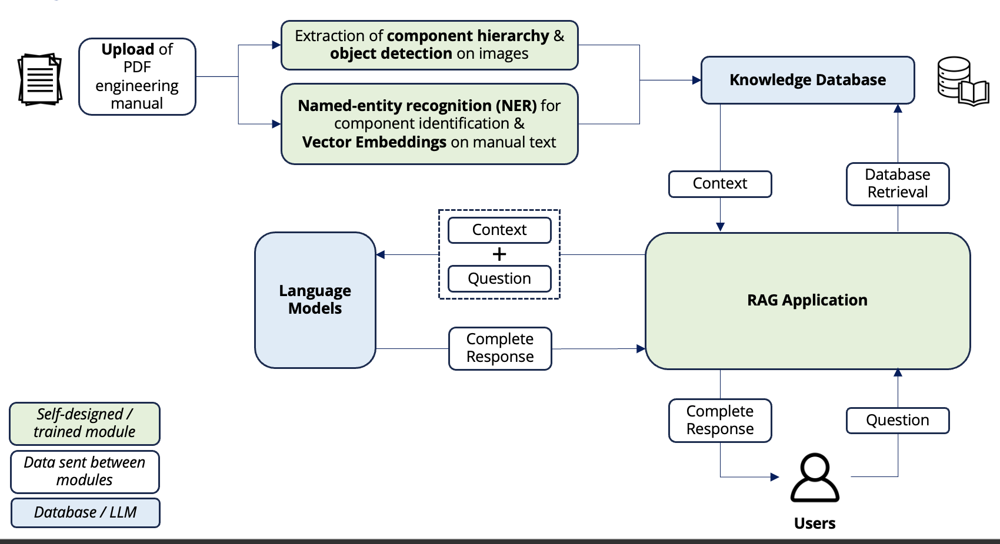
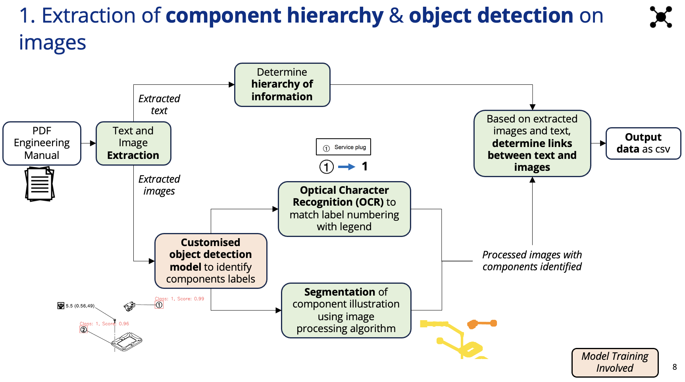
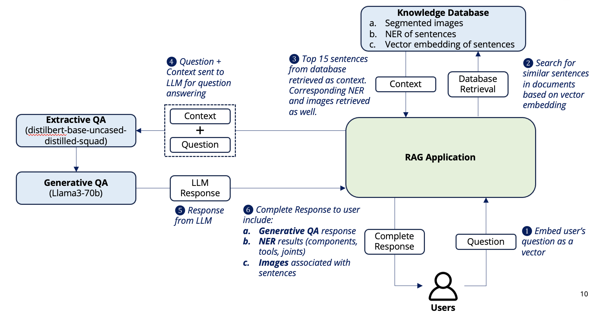
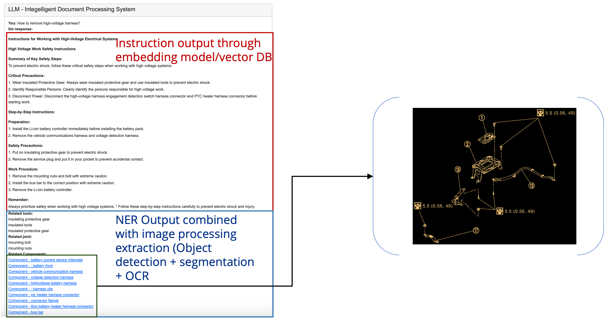

Intelligent Document Processing System
Introduction
Overview
The engineering sector is undergoing a significant transformation as sustainability becomes a central focus of development and innovation. Among the myriad of high-value products, electric vehicle (EV) batteries stand out due to their essential role in the shift towards clean energy transportation. As demand for EVs rises, so does the need for effective remanufacturing, repurposing, and recycling strategies. These processes not only extend the lifecycle of critical components but also contribute to environmental conservation by minimizing waste.
Challenges in Maintenance
Despite the growing urgency for efficient maintenance and servicing of EV batteries, engineers and technicians face considerable challenges. The complexity of service manuals—often dense with technical jargon, intricate diagrams, and numerous operational protocols—can create barriers to effective knowledge application. Navigating these manuals can lead to inefficiencies, increased maintenance times, and potential safety risks, ultimately hindering progress toward more sustainable engineering practices.
Project Objective
This project seeks to mitigate these challenges by developing a sophisticated knowledge database that extracts and organizes information from existing engineering manuals. Utilizing advanced natural language processing (NLP) techniques for text analysis and vision system processing for image interpretation, our solution will streamline the maintenance process for EV batteries. The goal is to create an intuitive, user-friendly web application that allows users to query the database easily, retrieving relevant information and visual aids that enhance their understanding of complex components.
Technical Approach
The project begins with comprehensive data extraction from engineering manuals, primarily in PDF format. This process involves two critical components: text extraction and image extraction.
Data Extraction
Utilizing PDF parsing libraries, we extract text content from the manuals and simultaneously extract images embedded within the PDF. This ensures that all relevant information is captured accurately and stored systematically for subsequent processing.
Image Processing
We employ vision system processing to identify legend images that accompany main diagrams, utilizing object detection algorithms and optical character recognition (OCR) to extract and correlate textual information from the images. Additionally, segmentation techniques will break down complex images into identifiable sections, linking them to textual descriptions.
Text Processing
The extracted text undergoes rigorous processing, including sentence breakdown, cleaning, and named entity recognition (NER) to identify critical components, tools, and joints. The refined data is converted into vector embeddings to facilitate efficient searching and retrieval.
Integration of Large Language Model (LLM)
A chatbot interface will enhance user interaction with the knowledge database. Users will input queries that are transformed into vector form, with a filtering mechanism ensuring the retrieval of contextually relevant results. Utilizing advanced pipelines for question answering and text generation, the system will generate coherent, human-readable responses tailored to the user’s needs.
Deliverables
The deliverable is a robust web-based application that not only processes engineering manuals but also serves as a vital resource for maintenance professionals. Key functionalities will include user uploads of maintenance manuals, comprehensive document processing (both text and images), and an interactive querying system. By bridging the gap between complex technical documentation and practical application, this project aims to enhance the efficiency and effectiveness of maintenance processes in the engineering sector, supporting its broader commitment to sustainability and innovation.